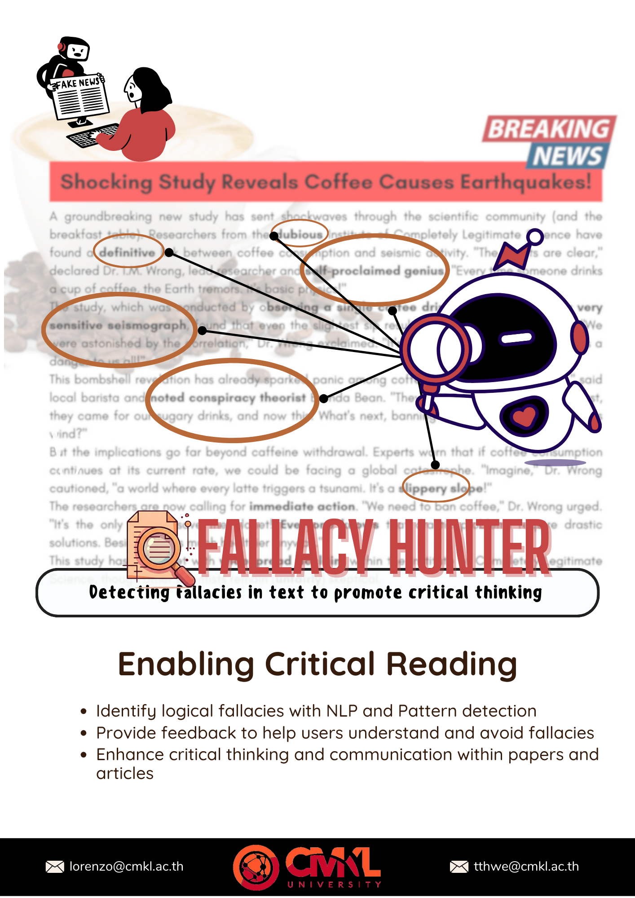
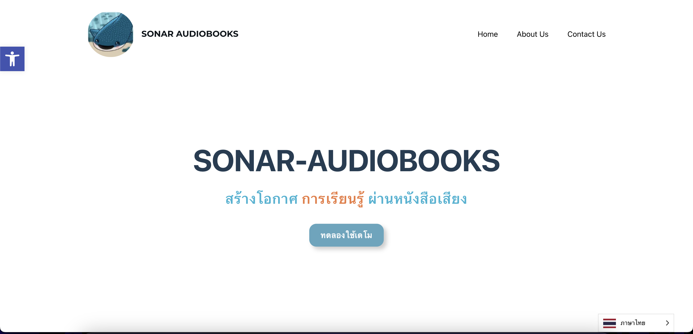
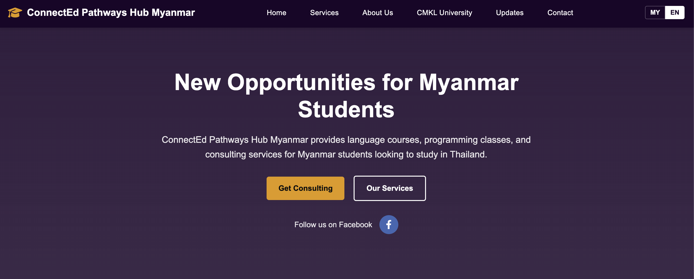
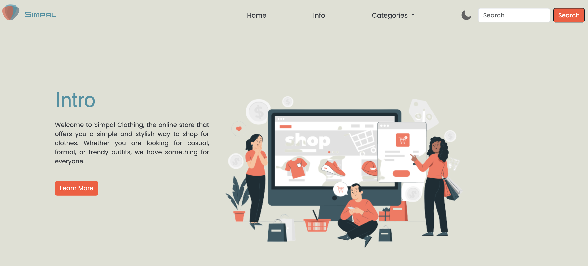
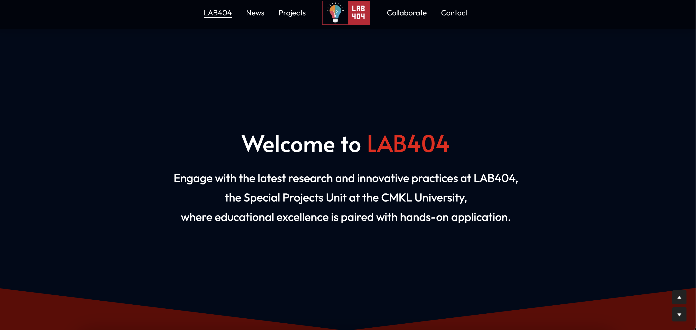

AI and Computer Engineering student, startup co-founder, and applied AI builder working across product strategy, accessibility technology, data analysis, computer vision, and cross-functional execution.
3.8QPA in AI & Computer Engineering
2025Co-founded SONAR AI CO., LTD.
AI + DataApplied systems, analytics, and strategy
Email: kelvinwai.khantphyo@gmail.comPhone: +66 92 091 0228LinkedIn: linkedin.com/in/khant-phyo-waiPortfolio: khantphyowai.vercel.appLocation: Lat Krabang, Bangkok, ThailandUpdated: July 2026
Professional Overview
Profile & Leadership Positioning
Khant Phyo Wai is an AI and Computer Engineering student at CMKL University with experience across applied AI, data analysis, experimental system development, and early-stage startup operations. His work connects technical execution with strategy: building prototypes, analyzing markets, coordinating stakeholders, and translating product decisions into financial and operational plans.
As Co-Founder and Chief Financial Officer of SONAR AI CO., LTD., he contributes to an AI-driven audiobook platform focused on accessible reading experiences for visually impaired users. His role combines financial modeling, pricing strategy, product feasibility, partnership development, and coordination between engineering, design, and non-technical stakeholders.
Across academic, startup, and industry environments, his portfolio reflects a practical interest in AI systems that can be deployed, tested, communicated, and connected to real users. He is especially focused on computer vision, generative AI, data-driven decision-making, accessibility, strategic planning, and multidisciplinary leadership.
AI & Technical Systems
Machine learning, deep learning, computer vision, OCR, text-to-speech, information retrieval, predictive modeling, experimental prototyping, and model evaluation.
Data & Analytics
SQL, Python, data exploration, trend identification, feature engineering, reporting workflows, and analytical support for decision-making.
Leadership & Management
Project management, cross-functional coordination, stakeholder communication, documentation, team alignment, and delivery planning across technical and business roles.
Strategy & Product
Financial modeling, pricing analysis, market feasibility, go-to-market planning, product-market fit exploration, user research, and presentation development.
Experience
Relevant Professional Experience
Co-Founder & Chief Financial Officer
SONAR AI CO., LTD.
June 2025 - Present
Co-founded an AI audiobook startup focused on scalable book-to-audio conversion and improved accessibility for visually impaired readers.
Lead financial planning, pricing analysis, unit economics, investor-facing materials, and strategic decision support for early product development.
Coordinate between engineering, design, business, and external stakeholders to align product capability, accessibility goals, and market constraints.
Support go-to-market planning for accessibility communities, libraries, schools, and educational institutions across Southeast Asia.
Represent the venture in showcases and competitions, contributing to awards, external visibility, and partnership conversations.
NOC Data Analyst Intern
Agoda Services Co., Ltd.
May 2025 - Aug 2025
Supported analysis of large-scale operational and product datasets for reporting, internal decision-making, and workflow visibility.
Developed a pipeline to organize and analyze quarter-over-quarter operational data using AI models within the NOC department.
Explored data trends, operational patterns, and reporting needs in a production-scale corporate environment.
Collaborated with cross-functional teams and improved communication between technical and non-technical stakeholders.
AI / Software Engineer Apprentice
CMKL University
April 2024 - Present
Developed and tested AI-driven systems involving machine learning, computer vision, and interactive prototypes.
Balanced experimentation with delivery requirements across multiple project timelines and research-style workflows.
Supported validation, iteration, technical documentation, and project communication for multidisciplinary AI projects.
Contributed business and financial analysis to connect technical decisions with broader project strategy.
AI-Centric Designer Intern
CMKL University
April 2024 - Aug 2024
Experimented with generative and image-based AI models for creative system prototyping and game development workflows.
Designed controlled experiments to test model parameters, outputs, performance tradeoffs, and practical integration constraints.
Worked with engineers to convert AI outputs into functional prototypes and process improvements.
Web Developer
Freelance / Self-Employed
Jan 2023 - Present
Develop responsive websites and web applications tailored to client needs, with attention to usability, clarity, and visual presentation.
Collaborate directly with clients to translate goals into UI/UX decisions, technical scope, and implementation plans.
Startup Venture
SONAR AI CO., LTD.
SONAR is an AI audiobook platform built to transform physical books into natural-sounding audio experiences. The venture focuses on accessibility, content conversion, and inclusive product design, especially for blind and visually impaired users.
Khant's contribution sits at the intersection of startup strategy and technical execution. He supports financial and operational planning while staying close to product feasibility, accessibility requirements, user needs, and engineering constraints.
Leadership: Co-founded the company and helps coordinate business, engineering, design, and external-facing workstreams.
Strategy: Developed financial projections, pricing assumptions, market feasibility analysis, and go-to-market direction for accessibility, library, and education channels.
AI Product Work: Contributed to OCR post-processing, audio generation workflows, OpenCV-based guidance, and book-tracking concepts for practical user interaction.
Stakeholder Management: Helped prepare presentations, partnership narratives, and showcase materials for competitions, institutions, and non-technical audiences.
Project Responsibilities
Business & Operations
Built financial models to estimate production economics, pricing structures, and operating assumptions.
Translated customer and accessibility needs into business requirements for product prioritization.
Supported market positioning for a platform that can reduce friction in audiobook creation and distribution.
Prepared strategic documentation and presentations for competitions, showcases, and partnership development.
Technical & Product
Worked with OCR, computer vision, and audio generation workflows to support the core product pipeline.
Helped refine an accessible interaction flow for scanning, detecting, tracking, and converting physical books.
Collaborated with technical teammates to understand engineering tradeoffs and communicate practical constraints.
Contributed to a demo website and user-facing presentation layer for the SONAR Audiobooks platform.
Selected Work
Applied AI & Strategy Projects
Mirror Relexion AI
Real-time AI installation | Computer vision | Generative AI
Built a real-time interactive visual system using TouchDesigner, computer vision, StreamDiffusion, ControlNet, and diffusion model workflows. The installation responds to live camera input and human movement, turning viewer behavior into dynamic AI-generated visuals.
Designed the interaction pipeline, motion response logic, and visual direction for live deployment contexts.
Balanced creative goals with system constraints, model latency, camera input quality, and event reliability.
Created deployment variations for live events and summit-style presentation environments.
TouchDesignerStable DiffusionOpenCVPython
Harmony Vision
AR learning system | User research | AI interaction
Designed an AR-powered guitar training concept that delivers visual guidance and feedback for beginner and intermediate learners. The project explored how computer vision and interactive overlays could make practice more intuitive.
Conducted user research to identify adoption barriers, learner needs, and feature priorities.
Explored technical feasibility using Unity, gesture tracking, C#, Arduino, and Python workflows.
Connected product strategy with education use cases and potential partnerships with music educators.
Unity3DPyTorchC#User Research
Thai Neighbourhood
Community strategy | Data analytics | Economic development
Contributed to a technology-driven community development initiative under CMKL University's R&D program, focused on sustainable local business growth, digital adoption, and cultural preservation.
Designed financial projections and strategic planning materials for long-term project viability.
Used AI and data analytics concepts to assess economic patterns, community needs, and resource planning.
Coordinated across entrepreneurs, researchers, community members, and institutional stakeholders.
Digital twin | Reinforcement learning | SaaS planning
Developed an AI-driven elevator optimization concept that uses predictive modeling and digital twin simulation to reduce wait times, optimize dispatching, and improve energy efficiency in high-rise buildings.
Explored reinforcement learning and simulation workflows for elevator scheduling and performance testing.
Built business-case materials around SaaS modeling, operational savings, and deployment feasibility.
Coordinated technical, building operations, and business considerations into a coherent product narrative.
TensorFlowPythonDigital TwinAWS
Additional Projects
AI, NLP & Web Implementation

Fallacy Hunter
NLP | Text analysis | Educational technology
Designed an AI-powered NLP tool concept for detecting logical fallacies in written arguments and helping users improve critical thinking.
Explored transformer-based classification for common fallacy categories and explanatory feedback.
Considered education, debate training, and learning management system integration as target markets.
Structured the project around iterative model improvement and user-facing explanations.
PyTorchHuggingFaceFlaskReact

Sonar Audiobooks Website
Product website | AI storytelling | Accessibility
Built a web presence for SONAR Audiobooks to communicate the platform's AI conversion workflow, accessibility mission, and product value to partners and potential users.
Translated technical capabilities into approachable public-facing messaging.
Supported product credibility through a clear website, demo narrative, and visual presentation.
Connected business development needs with user-facing web implementation.
ReactNode.jsAI IntegrationAccessibility
Web Portfolio & Client Work

ConnectEd PHM
Educational platform with interactive learning resources and student management capabilities.
Contribution: Implemented responsive web structure and learning-focused user flows.

Simpal Clothing
E-commerce website for a clothing brand with product catalog and shopping functionality.
Contribution: Developed a clean product presentation layer with responsive UI decisions.

Lab 404
Research lab website featuring project showcases, team profiles, and publication-style content.
Contribution: Supported content strategy, project presentation, and public-facing research communication.
Credentials
Education, Certifications & Closing Summary
Education
CMKL University, AI and Computer Engineering, expected Spring 2027.
Cumulative QPA: 3.8/4.0.
Notable coursework: Neural Networks, Deep Learning, Information Retrieval, AI Applications, Linear Algebra, and Inference Statistics.
Certifications
Character Design for Video Games, California Institute of the Arts.
AI and data: machine learning, computer vision, NLP, OCR, TTS, information retrieval, statistics, predictive modeling.
Creative and prototyping: TouchDesigner, Unity, Unreal Engine, Blender, Figma, data visualization, UI/UX design.
Business and management: financial modeling, market analysis, strategy, stakeholder communication, documentation, presentation, and project management.
Leadership Summary
Khant's portfolio demonstrates a developing leadership profile centered on applied AI, accessibility, and commercially aware technical work. He has operated as a founder, analyst, apprentice engineer, designer, and freelance developer, giving him experience in both building systems and coordinating the people, data, constraints, and strategy around them.
Portfolio Focus
This portfolio is positioned for opportunities that value AI implementation, data analysis, product thinking, cross-functional coordination, and strategic communication. It highlights not only project outputs, but also Khant's role in shaping feasibility, execution, stakeholder alignment, and business direction.